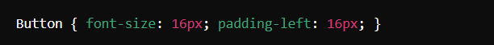
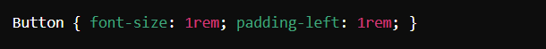
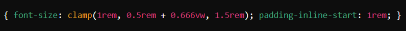

Nerd 5: Jeremy Keith
Declarative en Imperative Design
Samenvatting
Jeremy Keith presenteerde tijdens de Weekly Nerd een lezing over de concepten declarative en imperative design, waarbij hij interessante parallellen trok met muziek:
- Mozart (Classical Music) Zeer precies, vergelijkbaar met imperative programming waarbij je de computer exact vertelt wat te doen.
- Miles Davis (Jazz) Minder precies, puur magisch, vergelijkbaar met declarative programming waar je alleen het gewenste resultaat specificeert zonder exacte instructies. SQL is een voorbeeld van een declarative taal.
Declarative vs. Imperative
- HTML Declarative (structurering van documenten)
- CSS Declarative (je geeft suggesties aan de webbrowser)
- Javascript Imperative (krachtig, maar met meer complexiteit)
Toepassing op het Web
- Gemakkelijker te leren en mee te werken
- CSS is een declarative taal en kan met een declarative mindset worden benaderd
- "JavaScript should only do what only JavaScript can do." ~ Jeremy Keith
Voordelen van Declarative Design
-
Exacte controle
 -
Wat controle loslaten
 -
Nog meer controle loslaten

-
Extra
- CSS Functies die Richtlijnen Geven calc(), clamp(), min(), max(), repeat()
- Mentor de Browser in plaats van Micromanager "Be the browser's mentor, notits micromanager" ~ buildexcellentwebsite.css
- Declarative vs. Imperative Afhankelijk van de cultuur van de omgeving, design systemen, het team en het medium.
Reflectie
Ik vond de presentatie van Jeremy Keith bijzonder inspirerend en boeiend. Het feit dat de lezing in het Engels was, maakte het voor mij makkelijker om te volgen. In plaats van zich te richten op het schrijven van code, behandelde Jeremy conceptuele verschillen tussen declarative en imperative design, wat ik verfrissend vond. Deze concepten zijn niet alleen toepasbaar op coderen, maar ook op management, muziek en andere gebieden. De presentatie zette me aan het denken over mijn eigen voorkeuren en werkmethoden. Vooral het idee om de browser meer vrijheid te geven en als mentor op te treden in plaats van als micromanager sprak me aan. Dit inspireerde me om meer te vertrouwen op de kracht van declarative design en de voordelen die het biedt op het gebied van eenvoud en flexibiliteit.
Conlusie
Jeremy Keith's lezing bood waardevolle inzichten en zette me aan tot nadenken over mijn benadering van design en coderen. Zijn conceptuele benadering en inspirerende presentatie verdienen een rating van 8,5/10.